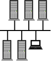
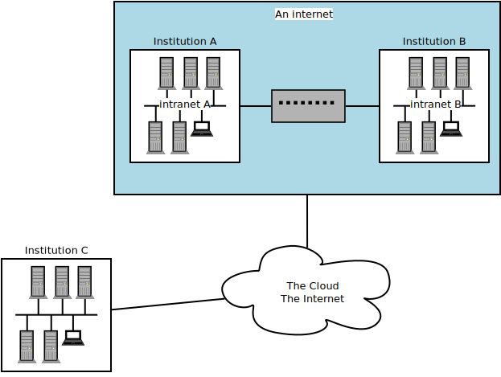
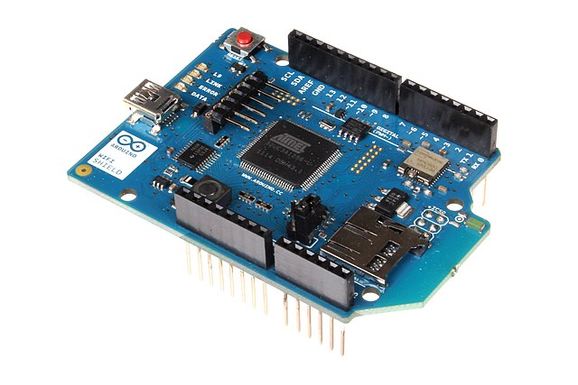
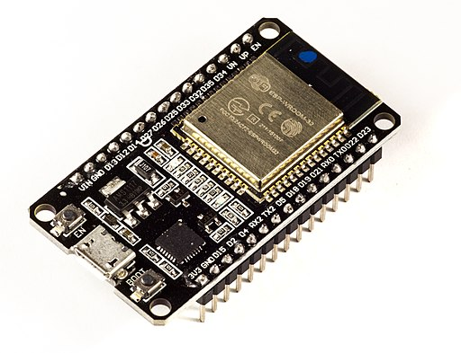
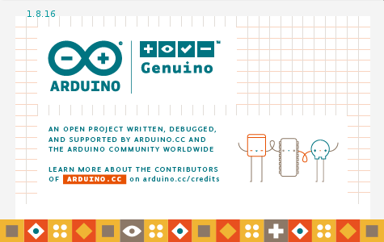
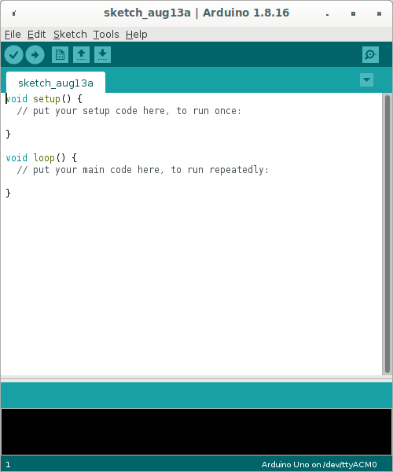
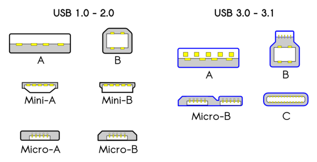
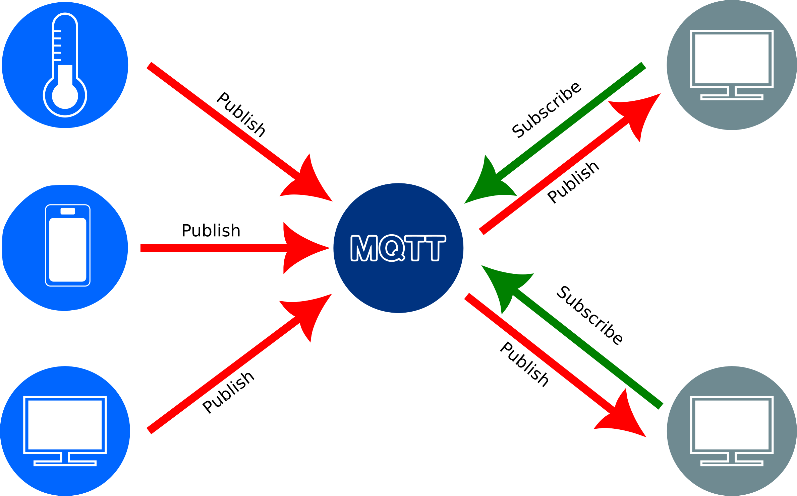

Content from An Introduction to the Internet of Things
Last updated on 2022-08-24 | Edit this page
Estimated time 12 minutes
Overview
Questions
- What is the Internet of Things?
- How does one connect something to the Internet of Things?
- What is a microcontroller?
- What is an Arduino?
Objectives
- Explain what the Internet of Things is.
- Explain what kind of things can be found on the Internet of Things.
- Explain how things are connected to the Internet of Things.
The Internet of Things
You might hear “Internet of Things” (IoT) and Arduino mentioned together and quite often those terms are used as if the one implies the other. However, this is not the case. The Internet of Things refers to all kinds of “Things” that have been connected to the Internet to sense the environment. You can almost think of IoT as the five senses of the Internet.
Before we continue we should clarify some key terminology used in networking. When two or more computers are connected such that they can communicate it is called a network.
It is also worth mentioning that one should distinguish between the words “internet” (with a lower case i) and “Internet” (with an upper case I). With an upper case I, Internet refers to the Internet that we connect to view web pages such as Google, Amazon etc, or to which we connect to to make Zoom or Skype calls. The Internet is a worldwide collection of networks that we are able to connect to via our Internet Service Providers. The Internet is also sometimes referred to as The Cloud. With a lower case i, internet refers to a collection of networks that are connected. If university A has a network on campus and university B has a network and they decide to connect the two networks then they would have an internet. However they might not necessarily be connected to The Internet. Another term that you might hear is intranet. If and instution connects their network to the Internet, they will refer to their internal network as the intranet. So university A can refer to their network as their intranet. If university A connects their intranet to that of University B, they created an internet.
Microcontrollers
“So what is this Arduino thing then?”, you may ask. Well, Arduinos are little devices (open-source electronics platform) that were designed to teach people about electronics and they can be used to build electronic circuits that can be connected to the Internet to serve as part of the Internet’s sensing. The main component on an Arduino is a microcontroller which is an “integrated circuit” (or you might know it as a chip) that can be used in conjunction with other electronic components to control things such as motors and sensors. It is, in actual fact, a very small computer and can also be programmed. However, the Arduino is not the only such device, some other popular devices are the ESP32 and ESP8266 boards. To complicate things somewhat, each of these boards come in different flavours - or, at least, different models.

The main thing to notice about the Arduino in the image above is that it has no connectivity to the Internet. So even if we connect sensors to the Arduino it cannot make part of the Internet of Things without being connected to the Internet. However, one can purchase (or build it yourself) a WiFi shield that fits on top of the Arduino and with the shield in place you can program the Arduino to connect to the Internet and publish all the data it retrieves, via the sensors that you connect to it, to the Internet.
Below is an image of the WiFi shield and you might be able to see how its pins allows it to be fitted onto the Arduino Uno.
Attribution: oomlout, CC BY-SA 2.0 https://creativecommons.org/licenses/by-sa/2.0, via Wikimedia Commons
There are now several models of Arduinos available, some with onboard WiFi or BlueTooth to allow connectivity to a network. Follow this link to the Arduino site if you would like to see the whole range of Arduino models that are available.
For the purposes of this workshop your instructor might choose to not use an Arduino but rather one of the other options that are available. It doesn’t really matter which one you use because for the projects covered in this lesson, any of them will do. Often, one of the ESP32 or ESP8266 series are chosen because they have onboard WiFi and are also significantly cheaper than Arduinos.
Attribution: Ubahnverleih, CC0, via Wikimedia Commons
The two main requirements for the device selected would be that it is 1) WiFi enabled and 2) can be programmed using the Arduino Integrated Development Environment (IDE). An IDE is just a computer program that provides a programming environment that makes things easier for programmers.
Notes for the instructor
Challenge 1: Which of the following are part of the Internet of things?
With the person next to you, discuss whether you think the following devices are part of the Internet and why? What other devices do you think would make part of the Internet of Things.
- A computer
- An Arduino
- A traffic camera
- A device publishing current temperature to the Internet
- A smart phone
Links:
-Microcontrollers vs Microprocessors -Smartphone in the IoT Era
Keypoints
- Explain the difference between the terms: network, internet, intranet and The Internet
- Identify devices that can be connected to the Internet of Things
- Explain how things can be connected to the Internet of Things.
- Explain what a microcontroller is.
- Explain what an Arduino or and ESP32/8266 is.
Content from The Arduino IDE
Last updated on 2022-08-24 | Edit this page
Estimated time 12 minutes
Overview
Questions
- What is an IDE?
- What is the purpose of the Arduino IDE?
- Which microcontrollers can be programmed with the Arduino IDE?
- How is the Arduino IDE used to program a microcontroller?
- How are microcontroller boards connected to the computer?
- How does the Arduino IDE connect to the microcontroller?
- How would you upload a program?
Objectives
- Explain what an IDE is.
- Explain what the Arduino IDE is used for.
- Identify microcontrollers that can be programmed with the Arduino IDE.
- Run the Arduino IDE.
- Connect the microcontroller board to the computer.
- Connect the microcontroller to the Arduino IDE.
- Enter, compile and upload code.
Introduction
Just like computers, microcontrollers have memory into which we can load programs. To make things easier and to be more productive, programmers have developed software called Integrated Development Environments (IDE). The IDEs provide an editor into which one can type the programming instructions and they usually also make provision for syntax highlighting. Syntax highlighting just means that certain keywords are coloured and that makes it much easier to read. The IDEs also provide ways of uploading code to devices and running the programs. The Arduino IDE was specifically developed for writing programs that uploaded and run on motorcontrollers. Originally it was aimed just at the Arduino but because it is such a convenient environment to work in, it has now been extended to also workwith other microcontrollers.
Running the Arduino IDE
For this episode we have to assume that you were able to successfully install the Arduino IDE and that you are able to start the software from the start menu or the desktop of your computer. When you run the software you will first see the splash window:
After a while the IDE will open. It is actually quite a simple interface. At the top you should see the File, Edit, Sketch, Tools and Help menu items. Just below the menu there are five icons to the left and one on the far right. Below the icons you should see a tab with a filename and a white editing area. Below the editor is a black terminal:
The white area is where you will be typing the code that will be uploaded to the microcontroller. In the black area you will see messages about the compilation of the code and the uploading process. Right at the bottom is a status bar where you will eventually be able to see whether the IDE could connect to your motorcontroller.
The first time you run the IDE the status bar will show the string Arduino Uno on /dev/ttyAM0 and in the editor you will see some skeleton code. Note the syntax highlighting:
C
void setup() {
// put your setup code here, to run once:
}
void loop() {
// put your main code here, to run repeatedly:
}Configuring the IDE for use with boards other than an Arduino Uno
If you will be using an Arduino or an Arduino compatible device, you don’t have to complete the steps in this section and you can skip to the secion on compiling.
By default the IDE is configured to program an Arduino Uno but we will be using an ESP32 WROOM 32 board so we first need to configure the IDE before we can start coding. Start by clicking on the File menu item and then on Preferences. Towards the bottom of the Preferences window you should find a text area with the label Additional Boards Manager URLs::

To find the appropriate URL you need to open a web browser and navigate to: https://github.com/arduino/Arduino/wiki/Unofficial-list-of-3rd-party-boards-support-urls. For the ESP32-WROOM-32 you have to find the line that reads:
Espressif ESP32: https://raw.githubusercontent.com/espressif/arduino-esp32/gh-pages/package_esp32_index.json
Copy and paste the address into the text area of the preferences window:
Click on OK
What we have just done is to tell the IDE where to find more information about the ESP32 boards. Because the ESP32 series use a different microcontrollers to the Arduino Uno our programs have to be compiled differently. By default all the Arduino boards are immediately available for selection in the IDE but for other boards we have to give the IDE a place where it can find the information for compiling the code for those other boards.
What is “compiling”?
We have used the term “compiling” a few times now. But what is that? You’ll notice, that once we start programming, the programming language uses English words. But, computers do not understand English. Computers understand only 0 and 1. A compiler takes the human readable programming language that we entered into the editor and “translates” it into instructions consisting of 0 and 1 that makes complete sense to the microcontroller. Although all microcontrollers understand 0 and 1, the instructions for different microcontrollers differ. The 0s and 1s are like sounds are to us humans. But different human languages combine the sounds differently. Similarly the 0s and 1s need to be arranged differently for microcontrollers designed by different manufacturers or even different models of microcontrollers manufactured by the same manufacturer. For this reason we have to tell the IDE which microcontroller board we are using so that the compiler can translate our English code into the correct dialect of microcontroller language.
Selecting the correct board
To select the board you want to compile for click on the Tools menu item, and then on Board:. On the dropdown menu, select the microcontroller board that you will be using. If it is not in the list, click on Boards Manager which is right at the top. The Boards Manager should pop up.

There will be several options available. If you will be using the ESP32 scroll down to find esp32. You can also type esp32 in the the text area right at the top of the window and then press enter. This will then perform a search and you should be able to find the esp32 option a little quicker. If you hover your mouse over the esp32 secion, a box with a version and an Install button should appear. Leave the version, which should be the latest, as is and click on the Install button.

When the installation is completed click the Close button.
If your Arduino is on the list to start with and you don’t need to install other boards, then just select the board you are using. If you had to install the esp32 boards, you will have to now click on the Tools menu option again and then select Boards. There should now be options for Arduino AVR boards and ESP Arduino. Select the ESP option and then select the board you are using which, if you are using the ESP32 WROOM 32, should be DOIT ESP32 DevKit V1
Connecting the board to the computer
To connect the motorcontroller board to the computer we need a USB cable. USB cables come in different flavours. You might know this from experience with your mobile/cell phone. The image below shows the names and shapes of the different types of USB connectors:
Most computers still have USB type A ports. The latest laptops might have USB C. An Arduino Uno usually has a type B USB port. So for an Uno you will need a cable that has a type A connector on the one side and a type b connector on the other. If your laptop has a type C port you will need type A to type C converter to make the cable fit. An Arduino nano will probably need a type A to type Mini-B cable and an ESP32 will need a type A to Micro-B cable. Chances are that, if you are using devices provided by your host, that they will have the correct cables. Just be aware that if your laptop has a type C port you might need an adapter.
You can now use the cable to connect the motorcontroller board to the computer. Windows computers usually play a sound when you connect a USB device.
Selecting the correct serial port in the IDE
You should now be able to get your Arduino IDE to recognise your motorcontroller board. In the IDE, click on Tools and then on Port. You should see at leat one but perhaps more ports listed. Your IDE might already have selected the port automatically when you connected the cable. On Windows the devices are usually named COM1, COM2, COM3 etc. Figuring out which port is being used is sometimes a bit messy. Your instructor or workshop helpers might be able to assist you with this.
## Upload our first sketch
If all went well you should now be able to upload a program to the motorcontroller board. We are going to enter a very simple program just to make sure everything is working. En the editor part of the IDE, modify the code to read as follows:
C
void setup() {
Serial.begin(9600);
}
void loop() {
Serial.println("Hello");
delay(5000);
}We’ll go into more detail about programming the motorcontroller in the next episode. This little program is just for testing. All it is going to do is to print the word Hello in the monitor, which we will open after compiling and uploading the program. To compile and upload press the second button from the left with the arrow pointing to the right. See the image below:
compile and run buttonIf all goes well you should see messages displayed in the terminal section below the editor. The messages should be similar to what is shown in the image. The progress counter should say (100%), indicating the all of the compiled code has been uploaded successfully:

If you are getting an error message similar to this, ``` Connecting……………………………….An error occurred while uploading the sketch .
A fatal error occurred: Failed to connect to ESP32: Wrong boot mode detected (0x13)! The chip needs to be in download mode. For troubleshooting steps visit: https://docs.espressif.com/projects/esptool/en/latest/troubleshooting.html ```
then you might have to download the BOOT button on your microcontroller board. If you wait for the message to say Connecting .. and start holding down the button when the dots appear, the code will suddenly start uploading.
You can now open the serial monitor by clicking first on Tools and then on Serial Monitor. The word Hello should now be printed to the monitor every five seconds.
Keypoints
- Explain what an IDE is.
- Explain what the Arduino IDE is used for.
- Identify microcontrollers that can be programmed with the Arduino IDE.
- Run the Arduino IDE.
- Connect the microcontroller board to the computer.
- Connect the microcontroller to the Arduino IDE.
- Enter code in the editor
- Compile and upload the
- Open the serial monitor
Content from Understanding the code
Last updated on 2022-08-26 | Edit this page
Estimated time 12 minutes
Overview
Questions
- In what language do we program in the Arduino IDE?
- What do the keywords, void, setup and loop do?
- How can we add explanatory comments to the code?
- What is a variable?
- What is a constant?
Objectives
- Identify the different parts of a sketch
- Explain the purposes of the different parts of a sketch
The language that we use in the Arduino IDE is called The Arduino Programming Language which is based on a another programming language called C++. It would have been easy if we could abbreviate The Arduino Programming Language as APL, but we can’t because APL refers to a completely different language. The programs written in the Arduino IDE are also not called programs but rather sketches.
The language consists of three parts: functions, values (variables and constants), and structure. If you remember the template that was automatically generated when we opened the IDE in the previous episode, you might have recognised the structure. All sketches require a setup and a loop as in the following code snippet:
C
void setup() {
// put your setup code here, to run once:
}
void loop() {
// put your main code here, to run repeatedly:
}There are more structural components which you can find on the language reference page at https://www.arduino.cc/reference/en/ but while setup and loop are compulsary, the other components are only used when needed. setup and loop are also functions. functions can be thought of as named groups of instructions. The structure of a function always includes the following features:
- a return value type
- a unique name
- parenthesis
- curly brackets
Challenge 2: Functions
Looking at the following code snippet, can you identify the above features:
C
void setup() {
// put your setup code here, to run once:
}
void loop() {
// put your main code here, to run repeatedly:
}
int getMagicNumber() {
return 42;
}- The keywords
voidandintare the return types. If a function does not have a value to return, the keywordvoidis used.intmeans that the function returns a value that is an integer. You can find a list of all thedata typesthat can be return on the Language Reference website - The words
setup,loopandgetMagicNumberare the names of the functions. - The names of the functions are followed by parenthesis. We will see later on how they are used.
- The curly bracket indicate the beginning and end of the function. The left curly bracket should appear after the parenthesis. The following lines are instructions that the motorcontroller has to execute. The right curly bracket indicates closes the function and indicates that the end has been reached. If the function does not have a return type of
void, i.e. it has any of the other data type, then the last line in the function has to contain the keywordreturnfollowed by a value (or a variable containing a value) of the specified return type.
Variables and constants are named memory positions in the motorcontroller in which one can store a value. The value of variables can be changed but the values of constants cannot be changed after they have been allocated a value for the first time.
Any instructions that we put in the setup will be executed when the program starts.
Content from Connecting the first sensor
Last updated on 2022-08-27 | Edit this page
Estimated time 12 minutes
Overview
Questions
- Question
Objectives
- Objective
Connecting the temperature sensor
ToDo
Explain how to connect the DHT11/22 sensor according to image below
Before entering our code we need to install a special library that is required for the temperature sensor. Without the library the code that we will need to write to get the sensor to work will be much more complicated. Fortunately there are many people around the world the write the difficult code and make it available as libraries for us to make our lives easier.
To install the library click on the Tools menu item and then select Manage libraries.... The Library Manager window should pop up. In the text field type dht sensor library and press enter to search for the library. Look for the entry “DHT sensor library by Adafruit” and then click on the Install button.

Close the library manager by clicking on the Close button. Next we want to create a new sketch. Click on File and then New. A new instance of the Arduino IDE should open. You can now enter the code below in the editor
C
#include <DHT.h>
#define DHT_SENSOR_TYPE DHT22
#define DHT_SENSOR_PIN 32 // ESP32 pin connected to DHT sensor
const int readingdelay = 3000;
DHT dht_sensor(DHT_SENSOR_PIN, DHT_SENSOR_TYPE);
void setup() {
Serial.begin(9600); // initialize serial
Serial.println(F("Starting ..."));
dht_sensor.begin(); // initialize the DHT sensor
}
void loop() {
float temperature = dht_sensor.readTemperature(); // read temperature in Celsius
if (isnan(temperature)) {
Serial.println("Failed to read from DHT sensor!");
} else {
char tempString[8];
dtostrf(temperature, 1, 2, tempString);
Serial.print("Temperature: ");
Serial.println(temperature);
}
// wait a 3 seconds between readings
delay(readingdelay);
}Once you have entered the code you can press the Upload button again. The code should compile and then upload to the microcontroller board. Don’t forget to press and hold down the BOOT button until the uploading starts.
Content from Connecting the second sensor
Last updated on 2022-08-27 | Edit this page
Estimated time 12 minutes
Overview
Questions
- Question
Objectives
- Objective
Connecting a light level sensor
ToDo
Explain how to connect the resistors according to image below
C
#define LIGHT_SENSOR_PIN 32 // ESP32 pin GIOP36 (ADC0)
const int readingdelay = 3000;
void setup() {
Serial.begin(9600); // initialize serial
Serial.println(F("Starting ..."));
}
void loop() {
int lightlevel = analogRead(LIGHT_SENSOR_PIN); // read light level
Serial.print("Light: ");
Serial.println(lightlevel)};
// wait a 3 seconds between readings
delay(readingdelay);
}Explanation of the code
Content from Combining the two circuits
Last updated on 2022-08-27 | Edit this page
Estimated time 12 minutes
Overview
Questions
Objectives
- Combining the two circuits
- Combine the code for the two circuits
Combine the two circuits on one breadboard
Combine the code for the two circuits
C
#include <DHT.h>
#include <WiFi.h>
#define DHT_SENSOR_TYPE DHT22
#define DHT_SENSOR_PIN 32 // ESP32 pin connected to DHT sensor
#define LIGHT_SENSOR_PIN 36 // ESP32 pin GIOP36 (ADC0)
const int readingdelay = 3000;
DHT dht_sensor(DHT_SENSOR_PIN, DHT_SENSOR_TYPE);
void setup() {
Serial.begin(9600); // initialize serial
Serial.println(F("Starting ..."));
dht_sensor.begin(); // initialize the DHT sensor
}
void loop() {
float temperature = dht_sensor.readTemperature(); // read temperature in Celsius
int lightlevel = analogRead(LIGHT_SENSOR_PIN); // read light level
if (isnan(temperature)) {
Serial.println("Failed to read from DHT sensor!");
} else {
/* When reading the temperature and light levels, we get the values
as numbers, but when we send it to the MQTT broker the values
have to be converted to strings. We therefore have to declare
variables of type char into which the number values can be transferred
*/
char tempString[8];
char lightString[8];
// Print the temperature to the monitor
Serial.print("Temperature: ");
Serial.println(temperature);
// Print the light level to the monitor
Serial.print("Light: ");
Serial.println(lightlevel);
// wait a 3 seconds between readings
delay(readingdelay);
}
}
Explain the code
Content from MQTT
Last updated on 2022-08-29 | Edit this page
Estimated time 12 minutes
Overview
Questions
- What is MQTT?
- How does MQTT work?
- What is an MQTT publisher?
- What is an MQTT broker?
- What is an MQTT subscriber?
- What is a client?
- What is a server?
Objectives
- Explain how MQTT works
Add MQTT
What is MQTT?
Message Queuing Telemetry Transport
MQTT (originally an initialism of MQ Telemetry Transport[a]) is a lightweight, publish-subscribe, machine to machine network protocol. It is designed for connections with remote locations that have devices with resource constraints or limited network bandwidth.
There are three components to the MQTT architecture, publishers, subscribers and a broker. Publishers are devices on the Internet of Things that publish messages with a specific topic to a broker. Subscribers subscribe to specific topics on the broker. When a new value for a specific topic is published by a publisher, then all the subscribers to that topic will receive it.
Importing the MQTT library into the Arduino IDE
To be able to enable MQTT functionality we need to add yet another library to our Arduino IDE. As before select Tools on the menu and then Manage Libraries. Enter PubSubClient into the text box for searching. Scroll down until you find PubSubClient by Nick O'Leary and click the Install button:

There are three pieces of information that we will need before we enter the code for sending and messages via MQTT:
- The
ssidof your Internet access point - The password for the access point
- The IP address or hostname of your MQTT broker
There are several free MQTT servers available on the Internet. Alternatively one can set up one’s own server running an MQTT broker. In the diagrams below two alternative setups are shown. In the first case there is an MQTT server on the Internet that devices can publish or subscribe to. In the second case a local MQTT broker is used which has the advantages that all network traffic can be private, it doesn’t have to be shared to the Internet. For the purposes of this workshop for instance we might want to set up our own server so that we are not dependent on the Internet.

In the sketch below you will have to replace the values assigned to the variables ssid, password and mqtt_server. Your instructor should provide you with the appropriate values which will depend on the MQTT broker you are going to use.
Include instructions on setting up a Raspberry Pi with RaspAP and Mosquitto
For now we will continue as if your instructor has set up a local network that includes an access point to which your computer has to connect and an MQTT broker. You might, or might not, be connected to the Internet once you connect to the access point, but that won’t matter.
C
#include <DHT.h>
#include <WiFi.h>
#include <PubSubClient.h>
#define DHT_SENSOR_TYPE DHT22
#define DHT_SENSOR_PIN 32 // ESP32 pin connected to DHT sensor
#define LIGHT_SENSOR_PIN 36 // ESP32 pin GIOP36 (ADC0)
const int readingdelay = 3000;
const char* ssid = "raspi-webgui";
const char* password = "w0rksh0p";
const char* mqtt_server = "192.168.0.1";
DHT dht_sensor(DHT_SENSOR_PIN, DHT_SENSOR_TYPE);
WiFiClient espClient;
PubSubClient client(espClient);
String topic_temperature = "/dht22/temperature";
String topic_light = "/ldr/light/";
void setup() {
Serial.begin(9600); // initialize serial
Serial.println(F("Starting ..."));
dht_sensor.begin(); // initialize the DHT sensor
setup_wifi();
client.setServer(mqtt_server, 1883);
client.setCallback(callback);
}
void loop() {
if (!client.connected()) {
reconnect();
}
client.loop();
float temperature = dht_sensor.readTemperature(); // read temperature in Celsius
int lightlevel = analogRead(LIGHT_SENSOR_PIN); // read light level
if (isnan(temperature)) {
Serial.println("Failed to read from DHT sensor!");
} else {
/* When reading the temperature and light levels, we get the values
as numbers, but when we send it to the MQTT broker the values
have to be converted to strings. We therefore have to declare
variables of type char into which the number values can be transferred
*/
char tempString[8];
char lightString[8];
/**
* Transfer the number values into strings
*/
dtostrf(temperature, 1, 2, tempString);
dtostrf(lightlevel, 1, 2, lightString);
// Print the temperature to the monitor
Serial.print("Temperature: ");
Serial.println(temperature);
// Publish the temperature to the MQTT broker
publishMQTT(topic_temperature, tempString);
// Print the light level to the monitor
Serial.print("Light: ");
Serial.println(lightlevel);
// Publish the light level to the MQTT broker
publishMQTT(topic_light, lightString);
// wait a 3 seconds between readings
delay(readingdelay);
}
}
void setup_wifi() {
delay(10);
// We start by connecting to a WiFi network
Serial.println();
Serial.print("Connecting to ");
Serial.println(ssid);
WiFi.begin(ssid, password);
while (WiFi.status() != WL_CONNECTED) {
delay(500);
Serial.print(".");
}
Serial.println("");
Serial.println("WiFi connected");
Serial.println("IP address: ");
Serial.println(WiFi.localIP());
}
void callback(char* topic, byte * message, unsigned int length) {
Serial.print("Message arrived on topic: ");
Serial.print(topic);
Serial.print(". Message: ");
String messageTemp;
for (int i = 0; i < length; i++) {
Serial.print((char)message[i]);
messageTemp += (char)message[i];
}
Serial.println();
}
void reconnect() {
// Loop until we're reconnected
while (!client.connected()) {
// Create a random client ID
String clientId = "ESP32Client-";
clientId += String(random(0xffff), HEX);
Serial.print(clientId + " attempting MQTT connection...");
// Attempt to connect
if (client.connect(clientId.c_str(), "jannetta", "f0r3v3rl1n8x")) {
Serial.println("connected");
} else {
Serial.print("failed, rc=");
Serial.print(client.state());
Serial.println(" try again in 5 seconds");
// Wait 5 seconds before retrying
delay(500);
}
}
}
void publishMQTT(String topicString, char payload[8]) {
unsigned int length = topicString.length() + 1;
char topic[length];
topicString.toCharArray(topic, length);
Serial.print(topic);
Serial.print(": ");
Serial.println(payload);
client.publish(topic, payload, true);
}
String byteArrayToString(byte * byteArray, unsigned int length) {
String messageTemp;
for (int i = 0; i < length; i++) {
messageTemp += (char)byteArray[i];
}
return messageTemp;
}Content from Subscribing to a topic
Last updated on 2022-08-14 | Edit this page
Estimated time 12 minutes
Overview
Questions
- Question
Objectives
- Objective